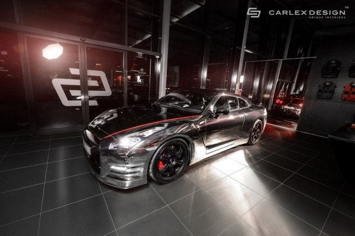
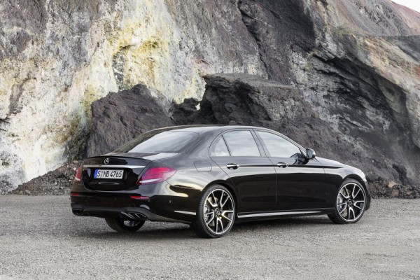

НЕМЦЫ ПРЕДСТАВИЛИ НОВЫЙ MERCEDES-AMG E43 4MATIC

Mercedes-AMG представила высокопроизводительную версию нового E-Class (W213), которая получила вместе с именем E43 новый двигатель и систему полного привода в стандартный конфигурации.
Под капотом располагается 396-сильный 3,0-литровый двигатель V6 битурбо, который также может похвастаться 384 фунт-фут (520 Нм) крутящего момента на 2500 оборотах в минуту. Новинка Mercedes-AMG развивает скорость 100 км/ч всего за 4,6 секунды. Не изменяя традициям, немцы установили электронный ограничитель скорости на 250 км/ч.

По сравнению с C43, которая имеет тот же двигатель, Е43 получил дополнительные 34 л.с.. Крутящий момент на одном уровне. Масса автомобиля составляет 1840 килограммов. Также стоит отметить, что помимо системы полного привода E43 4MATIC, новинка обладает 9-ступенчатой автоматической коробкой передач.

Среди других особенностей отметим 19-дюймовые колеса AMG (опционально доступны 20-дюймовые), усиленную тормозную систему, спортивную подвеску.
Новинку покажут на публике в этом месяце на автосалоне в Нью-Йорке. Продажи в Европе стартуют с 20 июня, а поставки начнутся где-то в сентябре.
Источник: Worldcarfans.com